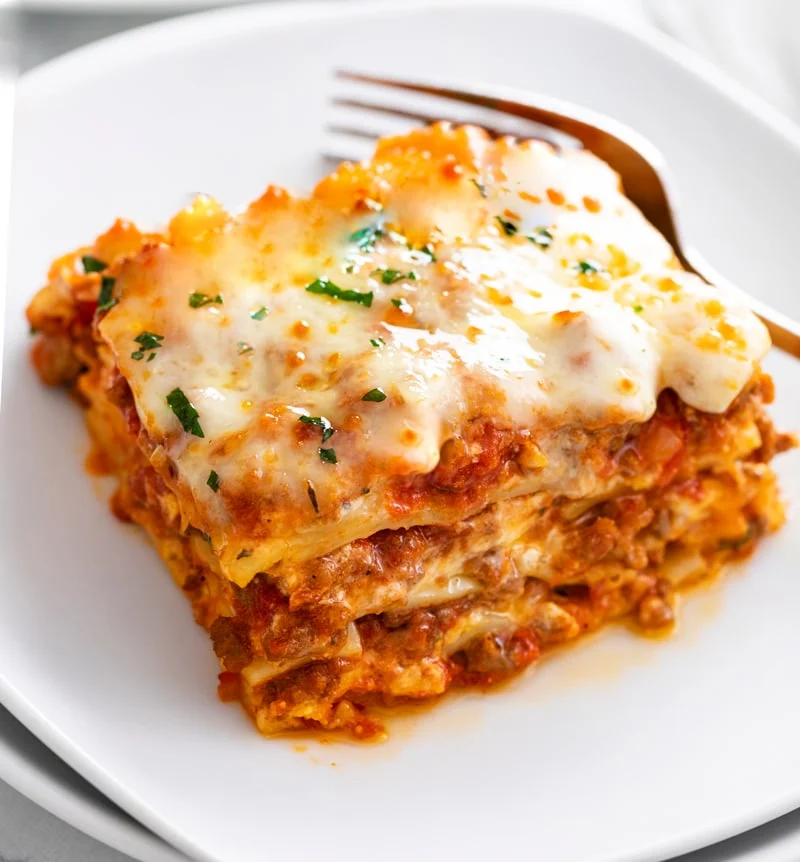

Lasagna is a classic Italian comfort dish made by layering wide sheets of pasta with a rich meat sauce, creamy cheese filling, and melted cheese on top. The sauce is typically made with ground beef or Italian sausage simmered with tomatoes, garlic, onions, and herbs like basil and oregano, creating a deep, savory flavor. Between the pasta layers, a mixture of ricotta cheese, eggs, and sometimes parsley adds a smooth, creamy texture that balances the heartiness of the sauce.
As the lasagna bakes, the layers meld together, and the top becomes golden and slightly crispy while the inside stays soft and flavorful. It's usually finished with mozzarella and Parmesan cheese for that classic stretchy, cheesy bite. Once out of the oven, letting it rest for a few minutes helps it set, making it easier to slice and serve. Lasagna is often enjoyed as a hearty main course, perfect for family dinners or gatherings.
Bring a large pot of salted water to a boil and cook the lasagna noodles according to the package directions. Drain and lay them flat so they don't stick together.
Heat 1 tablespoon olive oil in a large pan over medium heat. Add the chopped onion and cook for 3-4 minutes until soft, then add the garlic and cook for about 30 seconds. Add the ground beef (or sausage) and cook until browned. Drain excess grease if needed. Stir in crushed tomatoes, tomato paste, 1 teaspoon salt, pepper, basil, and oregano. Let it simmer for about 10-15 minutes.
In a bowl, mix ricotta cheese, 1 egg, 2 tablespoons parsley (optional), and ½ teaspoon salt until smooth.
Preheat your oven to 375°F (190°C).
In a 9x13" baking dish:
Cover with foil (don't let it touch the cheese) and bake for 25 minutes. Then remove the foil and bake another 15-20 minutes until the top is bubbly and slightly golden.
Let the lasagna sit for 10-15 minutes before cutting. This helps it hold its shape.